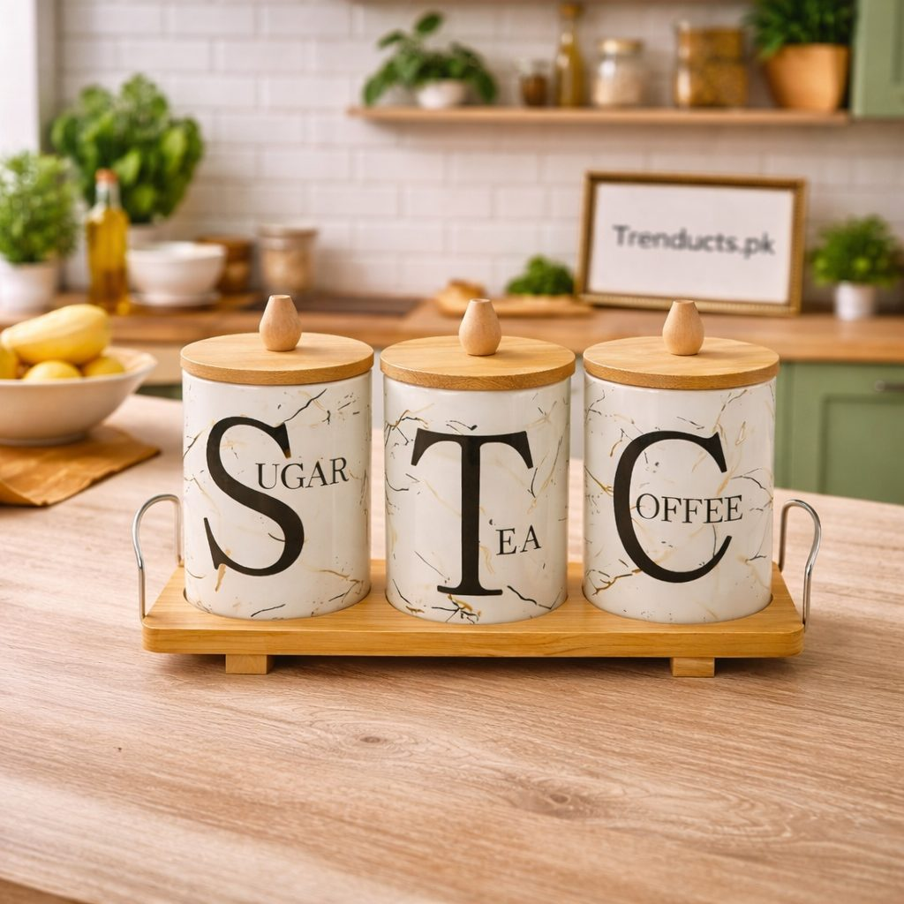
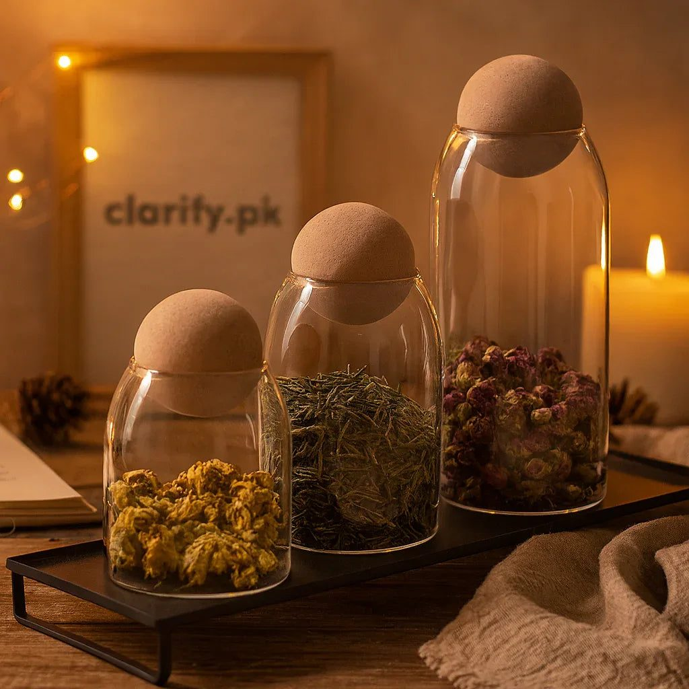

- Why the container matters
- Choosing a good jar
- Prepare jars before filling
- Keep the oil on top
- Use a dry spoon, always
- Where to store jars
- Signs that achar has gone bad
- Beyond achar
- Final thoughts
In many Pakistani homes, achar season is a family event. When raw mangoes appear in the market in May and June, mothers and grandmothers buy them by the kilo, cut them on the floor with a sarota, mix in fennel, nigella, fenugreek and red chilli, and pour in mustard oil. Jars are left in the sun for days. The result is a pickle that goes with daal chawal, parathas and every simple meal for the rest of the year.
All that work can be wasted if the achar is stored in the wrong container. Fungus, soft pieces and a rancid smell are common problems. This guide explains how to store achar so it stays delicious until the next mango season.
Why the container matters
Achar is acidic, oily and full of spices. These qualities preserve it, but they also react with some materials. Cheap plastic can absorb smells and stain permanently, and some metals react with acid and change the taste. Glass and glazed ceramic are the traditional and safest choices. Ceramic martabans have been used for generations because they keep light out and stay cool. Glass jars let you see the pickle and check the oil level easily.
Choosing a good jar
When buying jars for pickles or other pantry items, look for:

- Airtight lids with a rubber or silicone seal
- A wide mouth so you can reach in with a spoon
- Glass or glazed ceramic body without cracks
- A size that matches how much you use; smaller jars mean less exposure to air
Many families keep one large jar in the store and decant a small amount into a serving jar for daily use. This keeps the main batch untouched and fresh. Trenducts has a selection of ceramic and glass jars you can see at https://www.trenducts.pk/collections/food-storage-and-containers, including sets with stands and trays that look neat on the counter.
Prepare jars before filling
Wash jars in hot soapy water and rinse well. Dry them completely in the sun or in a warm oven, because any water left inside invites fungus. Even a single drop can spoil a whole batch. Make sure the lid and its seal are also completely dry before closing.
Keep the oil on top
The layer of oil on top of achar acts as a seal that keeps air and bacteria out. Always make sure the pieces are fully covered with oil. If the level drops, heat some mustard oil until it smokes, let it cool completely, and pour it in. Never add raw or warm oil.
Use a dry spoon, always
This is the golden rule every Pakistani mother repeats. Never put a wet spoon or your fingers into the achar jar. Moisture and food particles cause fungus quickly, especially in humid cities like Karachi. Keep a dedicated dry spoon in the serving jar or nearby.

Where to store jars
Store achar in a cool, dark place away from the stove and direct sunlight once it has matured. A pantry shelf or kitchen cabinet works well. Some families keep opened jars in the fridge during humid monsoon months to slow spoilage, though this can make the oil thick; let it come to room temperature before serving.
Signs that achar has gone bad
Check your achar from time to time. White or green fuzzy spots, a sour off smell different from the usual tang, very soft or slimy pieces, or oil that smells rancid are signs that the batch has spoiled. Do not try to scrape fungus off and keep eating; discard the affected jar to stay safe.
Beyond achar
The same good jars work for other pantry staples: chutneys, murabba, honey, dried fruit, sugar and tea leaves. Ceramic canisters with wooden lids look beautiful on the counter for tea and sugar. Clear glass jars with cork lids suit coffee beans, nuts and spices.
Final thoughts
Homemade achar carries the taste of family and tradition. Protect it with clean, dry glass or ceramic jars, a good layer of oil, dry spoons and a cool storage spot. With these simple habits, this year's mango pickle will taste just as good next spring as the day it was made.